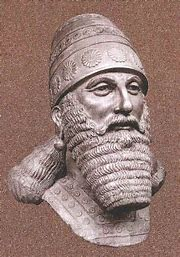

Tukulti-Ninurta
 Tukulti-Ninurta I fue un rey del Imperio Medio Asirio, conocido por sus conquistas militares y su impacto en la administración del reino. Fue hijo de Salmanasar I y llevó a Asiria a uno de sus momentos de mayor gloria.
- Victoria sobre los hititas – Derrotó al rey hitita Tudhaliya IV en la batalla de Nihriya, asegurando el control de territorios estratégicos.
- Conquista de Babilonia – Venció al rey Kashtiliash IV, saqueó Babilonia y se llevó la estatua del dios Marduk, lo que generó gran controversia en Mesopotamia.
- Expansión territorial – Extendió el dominio asirio hacia el norte y el este, asegurando rutas comerciales y fortaleciendo las fronteras.
- Fundación de Kar-Tukulti-Ninurta – Construyó una nueva ciudad capital cerca de Assur, reflejando su ambición de centralizar el poder.
- Primer "Rey de Reyes" – Fue el primer monarca en usar este título, destacando su supremacía sobre los territorios conquistados.
- Biblioteca real – Se le atribuye la recopilación de tablillas para una biblioteca, mostrando su interés por la administración y el conocimiento.
A pesar de sus logros, Tukulti-Ninurta I enfrentó una rebelión liderada por su propio hijo, Ashur-nadin-apli, quien lo sitió en su ciudad y lo llevó a la muerte. Tras su fallecimiento, Asiria entró en un período de estancamiento antes de su siguiente gran expansión.